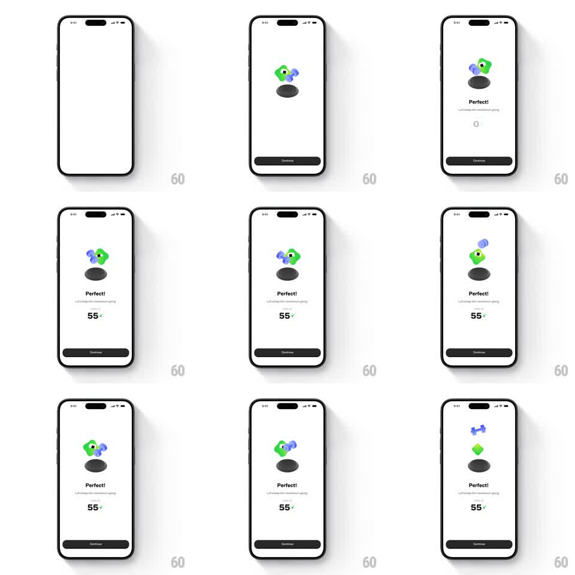

Media
Frame-by-frame

Rebuild this animation 1:1: Brilliant's perfect-score success screen - the green Koji mascot materializes over its shadow with a purple dumbbell orbiting it, "Perfect!" and the subline fade in, and the XP row counts up to 55 with a sparkle.

Rebuild this animation 1:1: Brilliant's perfect-score success screen - the green Koji mascot materializes over its shadow with a purple dumbbell orbiting it, "Perfect!" and the subline fade in, and the XP row counts up to 55 with a sparkle. ## Integration Integration: stack-agnostic spec - springs given as stiffness/damping, timed motions as duration + curve; map every value to your framework and animation library of choice. ## Scene White screen. Center: the green blob-shaped Koji mascot floating above a dark oval shadow, a small purple dumbbell circling it. Below: "Perfect!" headline, "Let's keep this momentum going." subline, the "TOTAL XP 55" row with a lightning bolt, and a full-width Continue button. ## Motion spec Pattern: mascot entrance + orbiting prop + count-up, ~2s. - Entrance: Koji scales in from 0 with a bounce (spring ~260/14, overshoot to ~1.12) while its shadow grows beneath it (scale 0.5 -> 1, 400ms). - Orbit: the dumbbell circles Koji continuously (~2.4s per loop, slight z-depth scale shift as it passes behind). - Text: "Perfect!" slides up 12px and fades in (300ms, +250ms delay), the subline following (250ms, +150ms). - XP: the total counts 0 -> 55 (700ms, ease-out) with a sparkle burst on landing; the bolt icon pops (scale 1 -> 1.2 -> 1, 200ms). - Idle: Koji bobs gently (translateY -6px, 1.6s alternate) above the shadow, which scales inversely. ## Calibration - The dumbbell passes behind the mascot at the top of its orbit - layer it, don't just circle in front. - Count-up uses tabular digits so the row doesn't jitter. ## Reduced motion Mascot, text, and final XP appear with a single 250ms fade; dumbbell parked. ## Don't miss - Koji is a soft 3D blob with a highlight and small face - flat 2D loses the character. - The shadow sells the float - it must scale and fade with the bob.